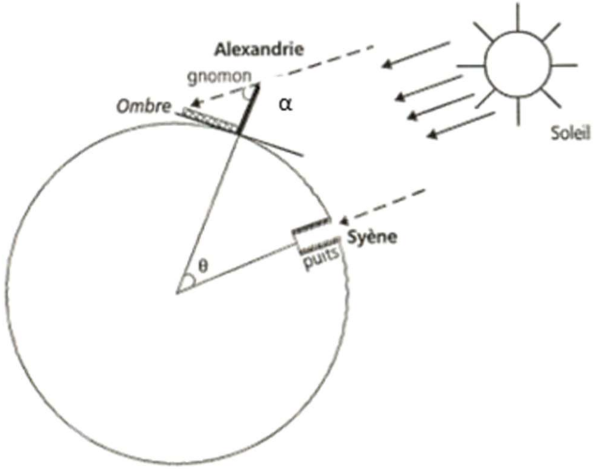
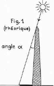
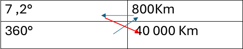

Au temps du pharaon Ptolémée III, datant d’environ 250 avant JC, Ératosthène, un grand, géographe, mathématicien, et philosophe grec, cherche à mesurer la circonférence de la terre. Il compara l'observation qu'il fit sur l'ombre de deux objets situés en deux lieux, Syène et Alexandrie, considérés situés sur le même méridien.
Dans le premier lieu, à Syène, il observa à une certaine heure qu’aucune hombre ne rentrait dans un puit, signifiant que la lumière rentrant dans le puit était parfaitement perpendiculaire au sol tandis qu’à Alexandrie, a la même heure, l’ombre projetée par un gnomon (Un bâton planté verticalement dans le sol duquel on observe l’ombre projetée d’un objet.) avait un angle de 7,2°.
Les rayons du soleil, l’ombre et le puit étant parallèles, on déduit que l’angle de l’ombre (l’angle alterne sur le schéma) est le même angle que celui qui sépare le gnomon et le puit depuis le centre de la terre. D’autres scientifiques avaient aussi mesuré à cette époque que la distance séparant les deux villes était de 5000 stades égyptiens A partir de ces connaissances, Ératosthène a réussi à déterminer le rayon et la circonférence de la terre, mais comment a-t-il fait ? Tout d’abord on cherche à trouver la distance entre Syène et Alexandrie mais en mètres cette fois ci : On sait que 1 stade égyptien est égal à 160 m. On réalise alors ce calcul : Nombre de stades égyptiens × longueur en mètres d’un stade égyptien = distance en mètres 5 000 × 160 = 800 000 mètres = 800 km On cherche maintenant à connaitre le méridien au niveau de Syène et Alexandrie : La terre étant ronde, un tour de cercle est égal à 360 °. Il est alors possible de réaliser un produit en croix : On sait en effet que lorsque l’angle au niveau du centre de la terre est de 7,2°, la distance qui sépare les deux points de cet angle a la surface de la terre est de 800KM. On peut alors réaliser le produit en croix pour déterminer le périmètre de ce cercle;
P = 360 × 80 / 7,2 P = 40 000 km Nous savons désormais que le méridien ou périmètre de la terre est de 40 000 km. On peut alors calculer son rayon a l’aide de la formule : P = 2π × R -P correspond au périmètre de la sphère (40 000Km) -R correspond au rayon de la sphère 40 000 = 2π × R R = 40 000 / 2𝜋 Pour conclure la méthode d’Eratosthène nous a permis de trouver que la circonférence de de la terre est de 40 000 Km, et que son rayon est d’environ 6366 Km.